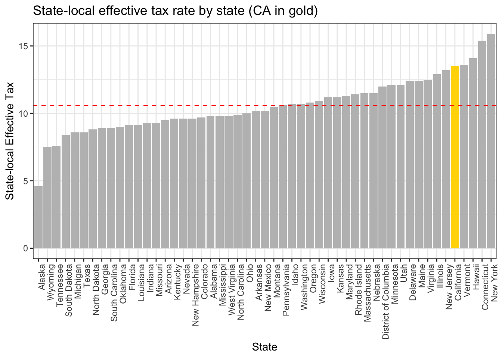

If you have friends or family, chances are at least one of them will shit on California and rant about how it’s screwing us on taxes.
Here I perform the bare minimum (google) to find out how CA ranks vs. other states.. so I’m not talking nonsense while arguing with friends.
Tax Burdens
We know governments collect revenue to operate (schools, healthcare, infrastructure, programs, administrative costs, etc). States rely on unique combinations of income, sales, property taxes. In addition, an individual’s total tax burden depends heavily on their particular financial situation (income levels, property, etc), making direct comparisons complicated.
I found this analysis comparing state-local tax burdens by state in the year 2022, and thought it provided some insight on this question of relative tax burden.
Briefly, authors define tax burden as “state and local taxes paid by a state’s residents divided by that state’s share of net national product”, and includes:
property
sales
excise
license taxes
income (when applicable)
corporate income
estate/inheritance/gift
documentary/transfer
severance
special assessments
The idea is to calculate a standard measure of state-local tax burden to enable comparisons between states. While this is an aggregate measure (read: NOT an estimate of individual tax burden), I think it gives a good idea of where California stands relative to other states. Of course, there’s nuance in this calculation, such as the fact that people pay taxes states they do not reside in (tax shifting), and some states rely heavily on such incomes (e.g. Florida, Nevada), so it’s good to keep that in mind.
Summary table 2022 (copied from the site):
Show the code
tax <-fread("tax_foundation_2022.csv") tax_df <- tax %>%rename(State = state, "State-Local Effective Tax Rate"= state_local_eff_tax, Rank = rank, "State-Local Tax Burden per Capita"= state_local_tax_burden_percapita, "Taxes Paid to Own State per Capita"= tax_paid_own_state, "Taxes Paid to Other States Per Capita"= tax_paid_other_states)kbl(tax_df) %>%kable_styling(bootstrap_options =c("striped", "hover", "condensed"))
State
State-Local Effective Tax Rate
Rank
State-Local Tax Burden per Capita
Taxes Paid to Own State per Capita
Taxes Paid to Other States Per Capita
Alabama
9.80%
20
$4,585
$3,578
$1,007
Alaska
4.60%
1
$2,943
$1,527
$1,416
Arizona
9.50%
15
$5,156
$3,997
$1,159
Arkansas
10.20%
26
$5,031
$3,598
$1,433
California
13.50%
46
$10,167
$8,711
$1,457
Colorado
9.70%
19
$6,699
$5,010
$1,689
Connecticut
15.40%
49
$12,151
$9,883
$2,268
Delaware
12.40%
42
$7,170
$5,580
$1,591
District of Columbia
12.00%
-39
$11,654
$9,060
$2,594
Florida
9.10%
11
$5,406
$3,533
$1,873
Georgia
8.90%
8
$4,862
$3,711
$1,151
Hawaii
14.10%
48
$8,410
$7,082
$1,328
Idaho
10.70%
29
$5,402
$4,140
$1,262
Illinois
12.90%
44
$8,390
$6,866
$1,523
Indiana
9.30%
14
$5,030
$3,965
$1,064
Iowa
11.20%
34
$6,086
$4,812
$1,274
Kansas
11.20%
33
$6,353
$4,971
$1,382
Kentucky
9.60%
17
$4,669
$3,679
$990
Louisiana
9.10%
12
$4,762
$3,705
$1,056
Maine
12.40%
41
$6,906
$5,712
$1,194
Maryland
11.30%
35
$7,680
$5,940
$1,740
Massachusetts
11.50%
37
$9,405
$7,565
$1,840
Michigan
8.60%
5
$4,720
$3,595
$1,125
Minnesota
12.10%
39
$7,763
$6,316
$1,448
Mississippi
9.80%
21
$4,220
$3,422
$798
Missouri
9.30%
13
$4,953
$3,666
$1,287
Montana
10.50%
27
$5,795
$4,200
$1,595
Nebraska
11.50%
38
$6,720
$5,327
$1,393
Nevada
9.60%
18
$5,554
$3,932
$1,622
New Hampshire
9.60%
16
$6,593
$4,784
$1,809
New Jersey
13.20%
45
$9,648
$7,696
$1,952
New Mexico
10.20%
25
$4,835
$3,859
$977
New York
15.90%
50
$12,083
$10,380
$1,702
North Carolina
9.90%
23
$5,299
$4,156
$1,143
North Dakota
8.80%
7
$5,403
$3,800
$1,603
Ohio
10.00%
24
$5,530
$4,380
$1,149
Oklahoma
9.00%
10
$4,527
$3,380
$1,148
Oregon
10.80%
31
$6,572
$5,191
$1,381
Pennsylvania
10.60%
28
$6,723
$5,354
$1,369
Rhode Island
11.40%
36
$6,948
$5,273
$1,675
South Carolina
8.90%
9
$4,596
$3,365
$1,231
South Dakota
8.40%
4
$5,196
$3,526
$1,670
Tennessee
7.60%
3
$4,036
$3,082
$954
Texas
8.60%
6
$4,994
$3,849
$1,146
Utah
12.10%
40
$6,750
$5,346
$1,404
Vermont
13.60%
47
$7,958
$6,532
$1,426
Virginia
12.50%
43
$7,979
$6,367
$1,612
Washington
10.70%
30
$7,803
$6,069
$1,734
West Virginia
9.80%
22
$4,479
$3,444
$1,034
Wisconsin
10.90%
32
$6,231
$4,911
$1,320
Wyoming
7.50%
2
$4,691
$2,647
$2,045
Summary from the website:
The states with the highest state-local tax burdens in calendar year 2022 were:
New York (15.9 percent)
Connecticut (15.4 percent)
Hawaii (14.1 percent)
Vermont (13.6 percent)
California (13.5 percent)
New Jersey (13.2 percent)
Illinois (12.9 percent)
Virginia (12.5 percent)
Delaware (12.4 percent)
Maine (12.4 percent)
The states with the lowest state-local tax burdens in calendar year 2022 were:
Alaska (4.6 percent)
Wyoming (7.5 percent)
Tennessee (7.6 percent)
South Dakota (8.4 percent)
Michigan (8.6 percent)
Texas (8.6 percent)
North Dakota (8.8 percent)
Georgia (8.9 percent)
South Carolina (8.9 percent)
Oklahoma (9.0 percent)
California
California is ranked 4th in terms of state-local tax burden (after NY, CT, HI, and VT). For the moment, let’s put aside costs of living and other factors that go into deciding where to live — is the high tax burden enough of a reason for me to move to Texas (and replace my CA license plate ASAP)
Start by visualizing effective tax rates:
Show the code
pdat <- tax %>%mutate(state_local_eff_tax =as.numeric(gsub("[^0-9.-]", "", state_local_eff_tax)), state =factor(state, levels = state[order(state_local_eff_tax)])) %>%arrange(state_local_eff_tax) %>%mutate(fill =ifelse(state =="California", 'yes', 'no'))avg_tax =mean(pdat$state_local_eff_tax)ggplot(pdat, aes(x = state, y = state_local_eff_tax, fill = fill)) +geom_bar(stat ='identity') +scale_fill_manual(values =c('grey','gold')) +theme_bw() +theme(axis.text.x =element_text(angle =90, hjust =1), legend.position ="none") +labs(x ="State", y ="State-local Effective Tax", title ="State-local effective tax rate by state (CA in gold)") +geom_hline(yintercept = avg_tax, color ="red", linetype ="dashed", size =0.5)

National average state-local tax burden is 11.6%, while California’s is 13.5% — the percentage differential is 1.9%. Translating to per capita dollar amounts paid to one’s OWN state:
Show the code
pdat <- tax %>%mutate(tax_paid_own_state =as.numeric(gsub("[^0-9.-]", "", tax_paid_own_state)), state =factor(state, levels = state[order(tax_paid_own_state)])) %>%arrange(tax_paid_own_state) %>%mutate(fill =ifelse(state =="California", 'yes', 'no'))avg_tax =mean(pdat$tax_paid_own_state)ggplot(pdat, aes(x = state, y = tax_paid_own_state, fill = fill)) +geom_bar(stat ='identity') +scale_fill_manual(values =c('grey','blue')) +theme_bw() +theme(axis.text.x =element_text(angle =90, hjust =1), legend.position ="none") +labs(x ="State", y ="State-local taxes paid", title ="State-local taxes paid to own state (CA in gold)") +geom_hline(yintercept = avg_tax, color ="orange", linetype ="dashed", size =0.5)
So a 1.9% differential translate to ~ $3,700 per capita over the nationale average. My take away would be that yes CA pays more in taxes per capita, but I would also hesitate to balk at the tax premium we pay over the rest of country (and might actually argue that it’s ‘worth it’).
Anyway, obviously cost of living matters, and averages are sensitive to outliers, and things like political environment and culture and amenities and services are important factors in deciding where to live. But perhaps in terms of tax burden alone, CA isn’t the hellhole people think it is. Ideally it would be really interesting if there was a program to calculate theoretical tax burdens in any city/state for a given individual. Maybe if you’re middle class American, it doesn’t make a HUGE difference, but if you’re Jeff Bezos it makes sense to move to Florida.
Also – what’s it like living in Alaska?
Say what you want about CA, it is beautiful (Central California, on our way back to camp from Pinnacles National Park)